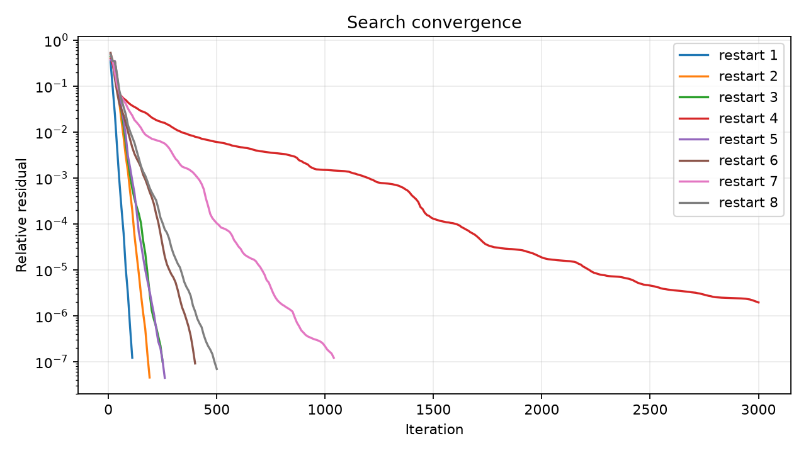
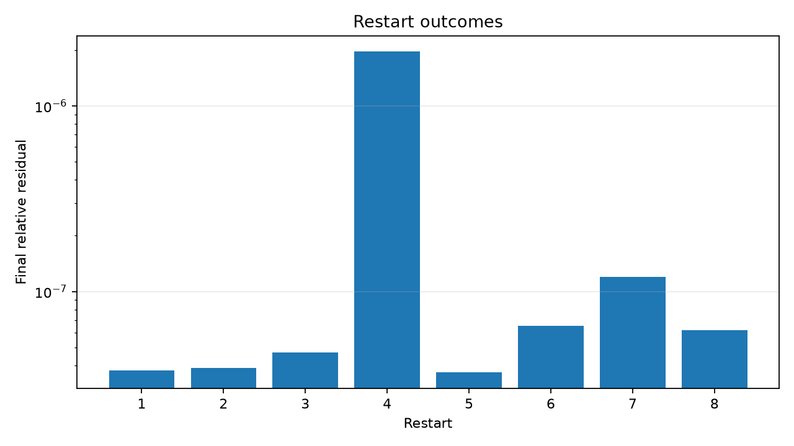

Search for finite matrix multiplication identities
Matrix multiplication is a basic operation used throughout computing, including statistics, genomics, graphics and machine learning.
For two 2 × 2 matrices,
| a | b |
| c | d |
| e | f |
| g | h |
the ordinary method computes four output values:
ae + bg, af + bh, ce + dg, cf + dh.
Each output requires two multiplications, for a total of 8 scalar multiplications. A rule that uses fewer products can change the asymptotic arithmetic cost when applied recursively.
Strassen's result was constructive: he wrote down an exact recipe showing how two 2 × 2 matrices can be multiplied using only 7 scalar multiplications instead of the usual 8.
| M₁ | (a + d)(e + h) |
|---|---|
| M₂ | (c + d)e |
| M₃ | a(f − h) |
| M₄ | d(g − e) |
| M₅ | (a + b)h |
| M₆ | (c − a)(e + f) |
| M₇ | (b − d)(g + h) |
The four entries are reconstructed using additions and subtractions:
| C₁₁ | M₁ + M₄ − M₅ + M₇ |
|---|---|
| C₁₂ | M₃ + M₅ |
| C₂₁ | M₂ + M₄ |
| C₂₂ | M₁ − M₂ + M₃ + M₆ |
So Strassen supplied the exact coefficients needed to perform and verify the algorithm, not merely an existence argument.
The recent OpenAI result proves the asymptotic upper bound
ω ≤ 9/4 = 2.25,
which implies that sufficiently efficient finite matrix-multiplication decompositions exist. Roughly, for every small ε > 0, there must be some fixed matrix size u admitting an exact decomposition with fewer than about
u2.25 + ε
products. The proof does not provide the explicit finite coefficients in the
way Strassen did. That distinction motivates fast_mm.
The 2 × 2, rank-7 case is a benchmark. The programme starts from numerical coefficients, searches for a low-residual decomposition, proposes exact representatives for every promising restart, and checks each proposal with an independent exact verifier. A small residual is never treated as a proof.
Result for this run
Numerical candidate found, but not proved
NUMERICAL_CANDIDATE
At least one numerical candidate met the configured residual threshold, but no exact identity was verified.
| Problem | 2 × 2 matrix multiplication |
|---|---|
| Naive bilinear products | 8 |
| Candidate bilinear products | 7 |
| Products saved | 1 (12.5%) |
| Scientific status | NUMERICAL_CANDIDATE |
Ordinary 2 × 2 matrix multiplication uses 8 bilinear products in the direct method. This run searched for a representation using 7.
The product count is an arithmetic-complexity quantity. It is not by itself a wall-clock speed claim.
| 1 | 2 |
| 3 | 4 |
| 5 | 6 |
| 7 | 8 |
| 19 | 22 |
| 43 | 50 |
| 19 | 22 |
| 43.000001 | 49.999999 |
| 3.2881e-07 | 1.273e-07 |
| 1.4303e-06 | -5.8941e-07 |
| Candidate bilinear products | 7 |
|---|---|
| Maximum output error | 1.430265e-06 |
| Relative output error | 2.201526e-08 |
This example shows one pair of matrices. It is not the proof. Exact verification checks the complete identity independently.
The numerical objective compares the candidate with the complete multiplication tensor. Exact verification, when reached, checks every required coefficient with exact rational arithmetic.
| Tensor coefficients tested numerically | 64 |
|---|---|
| Expected non-zero coefficients | 8 |
| Expected zero coefficients | 56 |
| Residual norm | 1.037595e-07 |
| Relative residual | 3.668453e-08 |
| Maximum coefficient error | 2.809298e-08 |
| Candidate threshold | 1.000000e-06 |
| Numerical candidates | 7 |
|---|---|
| Exact reconstruction | ATTEMPTED |
| Reconstruction proposals tested | 70 |
| Exact identity verification | NOT VERIFIED |
| Verified restart | none |
| Scientific conclusion | NUMERICAL_CANDIDATE |
At least one restart reached the numerical threshold, but none of the configured rational reconstruction proposals passed exact verification. This is not a proof.
A verified 2 × 2 identity using 7 products has
recursive arithmetic exponent 2.80735492, given by
log(rank) / log(matrix_size). The direct method has exponent 3.
| Matrix size | Naive recursive products | 7-product recursion |
|---|---|---|
| 2 | 8 | 7 |
| 4 | 64 | 49 |
| 8 | 512 | 343 |
| 16 | 4,096 | 2,401 |
| 32 | 32,768 | 16,807 |
| Method | lbfgsb |
|---|---|
| Configured restarts | 8 |
| Completed restarts | 8 |
| Best numerical restart | 5 |
| Numerical candidates | 7 |
| Reconstruction proposals tested | 70 |
| Termination | All configured restarts completed. |
| Runtime | 4.38437 s |


| Run ID | 20261007T122911823123Z_u2_r7_f9fd9846 |
|---|---|
| Project version | 0.3.0 |
| Git commit | not available |
| Python | 3.11.6 |
| NumPy | 2.4.6 |
| SciPy | 1.17.1 |
| Platform | macOS-12.6.6-x86_64-i386-64bit |
| Machine | x86_64 |
Every numerical restart is retained under restarts/. Exact files are
written only for identities that pass the independent verifier.
At least one numerical candidate met the configured residual threshold, but no exact identity was verified.
The candidate arithmetic exponent describes recursive arithmetic complexity. It does not imply the same improvement in practical CPU or GPU execution time.